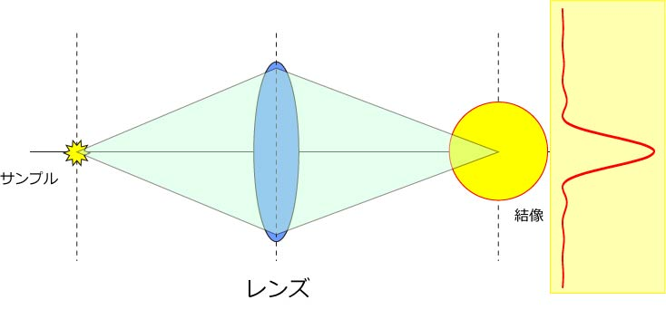
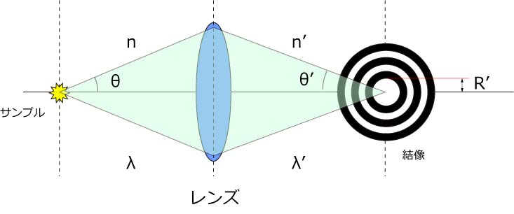

では，この結像する際の黄色い○，どの程度の大きさなのでしょう？
下の図を見てください．

右の赤い線がその強度分布です．
中心が一番強いですが，中心から離れるにしたがって，弱くなっていきます．
さらに，大きくなったり小さくなったり．．
これを真横から覗くと，
のように見えます．
このことを，
Airy disc
と呼びます．
なぜ，このようなことが起きるのか？
それは，光が波の性質を持っていて，回折現象が起きるからなのです．
さて，この形状は何に影響されるのでしょう？
それは，
像側の光の波長
像側の媒質の屈折率
像点に集まる光と，光軸とのなす最大開角
で決まります．
わかりにくいので，図を見てください．

ここで，
ｎ：光源側の媒質の屈折率
λ：光源側の光の波長
θ：光源からレンズに入る光が，光軸となす最大開角
ｎ’：像側の媒質の屈折率
λ’：像側の光の波長
θ’：像点に集まる光と，光軸とのなす最大開角
となります．
さて，Airy Disc，の中央の明るい部分の半径，Ｒ’，は以下の式で表すことができます．

ここら辺の説明は，
羊土社 改訂 顕微鏡の使い方ノート
を元に説明していますので，詳しくは上記の本を参考にしてみてください．
さて，この式を，先ほどのAiry Discのカーブに当てはめてみると，

となります．
つまり，中央から最初に強度が０になるところが，上記の式のR'と等しくなるわけですね．
では，前のページにある，２点から発せられた光の結像はどうなるのでしょう？